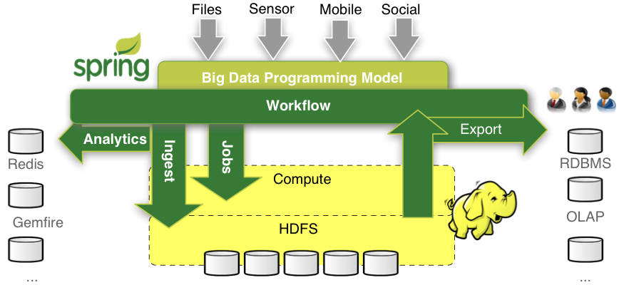

Real Time Analytics With Spring
David Turanski
Luke Taylor
Real Time Analytics
What's happening right now?
- Event driven
- Notify humans or systems in real time
- Simple counters and metrics
- Aggregate Counters
- Gauges, Moving Average
- Complex Event Processing
Spring XD Overview
One stop shop for:
- Data Ingestion
- Real-time Analytics
- Workflow Orchestration
- Data Export
- Built on existing Spring Assets
- Spring Integration, Batch, Data

XD='extreme data'
Spring XD
- Open source Apache license
- Out of the box executable servers
- Pluggable Module system
- Configuration via High level DSL, CLI, and REST services
Spring XD DSL
Based on Unix pipes and filters syntax
http | filehttp --port=8080 | file --rootDir=/data/
'http' and 'file' are Module names
Spring XD Streams
- A Stream is composed of Modules
- A Module is a Spring bean definition file
- Built with Spring Integration or Spring Batch
- Exposes properties via property placeholders
- Module types include: source, processor, sink, job, trigger
- A Stream is defined using the DSL as [source] | [p1] | ...| [pn] | [sink] (where p1..pn is a chain of processors)
- XD provides a number of modules out of the box. See Spring XD Technical Documentation for details.
- You can install custom modules
Spring XD Taps
A Tap is a stream whose source is a point in an existing stream
- Taps are primarily used for real time analysis
- Example:
twittersearch --query=Bieber | filetap:twittersearch > field-value-counter --fieldName=entities.hashtags.text
Spring XD Metrics
Spring XD provides persistent and in-memory Metrics Repositories
- Metrics are modules
- commonly act as sinks for taps
- XD includes the following Metrics
- Counter
- Field Value Counter
- Aggregate Counter
- Gauge
- Rich Gauge
- See Spring XD Analytics Documentation for details.
What is GemFire?
Pivotal GemFire
- A memory-oriented data grid that supports widely distributed architectures
- High throughput, low latency, and scalability
- Reliable event notification and guaranteed delivery
- Continuous querying
- Remote function execution
- Language Interoperability: C++, C# and Java client applications
- Supports various distributed system topologies
- Full Spring support (Spring Data GemFire)
- Well positioned for real time analytics
GemFire Function Execution
- Efficient way to process large data volumes "where the data lives"
- Java code deployed to GemFire server nodes
- The Function runs on local cache node and transports results over the network to the process that executed the function (Execution)
- Function Execution aggregates results using a ResultCollector
GemFire Continuous Query
- Good for asynchronous notification of data updates
- Client subscribes to a data query and binds it to a QueryListener callback
- GemFire invokes the QueryListener whenever the query's result set changes state
The Demo
Perform real time analytics on the Twitter stream
- Create a Twitter ingest stream with XD
- Create taps on the Twitter stream to feed XD Metrics
- Create a tap to pull selected data into GemFire for deeper analysis
- Show how to build and deploy a custom processor
- Execute a GemFire Function to perform a complex analysis of hash tags
- Dashboard web app to view analytics
Learn More. Stay Connected
Project Sites
Related sessions
- Thu 12:45 Real Time Event Processing and Decision Making - Lyndon Adams
- XD and Pivotal HD Demo - Demo lounge
- Talk to us on Twitter: @springcentral
- Find Session replays on YouTube: spring.io/video